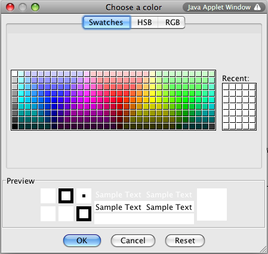

Last Modified 7/22/11
More on Color • Font Properties • Font Code • Polygons and Polylines
Earlier, we looked at the concept of color, the RGB model, and the Color class. Let's expand upon this a bit.
We've seen most of what the Color class has to offer. Three more member functions for Color objects that are useful are these functions, all of which return integers between 0 and 255 telling us the component values of colors:
These can be useful when we've input a color in a way other than by specifying the RGB values and want to replicate it.
We've worked with the setColor() member function of the Graphics class. There is also a getColor() member. We might use it as follows:
Color curColor = g.getColor();
It's worth noting that Color objects are what we called immutable. Taken literally, that means unchangeable, and in Java, this means that when a Color object is initialized, it cannot change.
So what happens when we use the assignment operator when on Colors?
Note that Strings are also immutable.
Now that we have a bit more GUI experience, let's look another Swing component that makes color selection easy. The JColorChooser dialog takes care of allowing us to let users pick colors without doing much programming. Here's the general form of how to use it:
colorObjectName = JColorChooser.showDialog(container, "Prompt message", colorObjectName);
Assuming we've defined a Color object called color and we're working inside an applet, here's an example:
color = JColorChooser.showDialog(this, "Choose a color", color);
The color you pass in is officially to be the initial color (and that color will be the default in the dialog that will appear). Should the user cancel the dialog, the color returned is null.
Note that this prompt will show three ways to choose a color:
Here's what the color chooser looks like:

More on Color • Font Properties • Font Code • Polygons and Polylines
Let's look at some font terminology.
Fonts are specified by three properties:
Font faces are broken into two major categories:
Another important classification of font faces is by the width of characters:
It's important to note that not all font faces are available on all systems. Therefore, it's best to choose fonts that are. Java provides some generic font types for serif, sans serif, and monospaced fonts that are your best choice. (Think web! Think platform-independence!)
Several font metrics are also defined, all with points as the unit of measurement. If we define the baseline as where the bottom of a line of text is, not counting the "tails" on letters like "g" and "y" that go down, we have the following metrics:
Consider Figure 15.13 on p. 653 of Deitel for an illustration of these metrics.
More on Color • Font Properties • Font Code • Polygons and Polylines
Use the Font class to create font objects. The constructor takes three arguments, as follows:
public Font(String name, int style, int size)
Here are some specifics:
The Font class provides these accessors to get information about fonts:
There are also these Boolean accessors:
We can use the Font class in conjunction with the Graphics class and its members getFont() and setFont().
Here's a partial applet that shows how fonts could be manipulated:
public class FontDemo extends JApplet implements ItemListener
{
// GUI Declarations omitted
private Font font; // current font
// init() omitted
@Override
public void paint(Graphics g) // draw message to screen
{
super.paint(g);
g.setFont(font); // change font as chosen
g.drawString("Yay fonts!", 10, 50);
}
public void itemStateChanged(ItemEvent e) // respond to color radio buttons
{
if(e.getSource() == radioSerif && e.getStateChange() == ItemEvent.SELECTED) // serif chosen
{
font = new Font("Serif", Font.PLAIN, 10);
}
if(e.getSource() == radioSansSerif && e.getStateChange() == ItemEvent.SELECTED) // sans serif chosen
{
font = new Font("SansSerif", Font.PLAIN, 10);
}
if(e.getSource() == radioMono && e.getStateChange() == ItemEvent.SELECTED) // mono chosen
{
font = new Font("Monospaced", Font.PLAIN, 10);
}
repaint();
}
}
There's a FontMetrics class we can use in a Graphics context. We would first create a FontMetrics object:
FontMetrics metrics = g.getFontMetrics();
Then we can call accessors on this object to find out the metrics of the current font:
We can also calculate the width in pixels of a string in this font using metrics.stringWidth(stringName);.
More on Color • Font Properties • Font Code • Polygons and Polylines
We've learned how to draw rectangles, lines, ovals, and arcs. Java also provides drawing capabilities for polygons and a polylines. Both are defined by a set of points (stored in parallel arrays of x and y coordinates). In both cases, each point is connected to the point after it, but in a polygon, the last point is connected to the first if they differ.
There is also a Polygon class defined. It provides two constructors:
The Polygon class modifier addPoint() allows us to add a point by passing two arguments, the x and y coordinates, respectively.
Consider the following example, which specifies a triangle using the default constructor:
Polygon triangle; triangle = new Polygon(); triangle.addPoint(50, 100); triangle.addPoint(50, 400); triangle.addPoint(200, 400);
We must draw polylines by specifying arrays of points, but we can draw polygons either by specifying arrays of points or by first defining a Polygon object. The methods drawPolygon() and fillPolygon() are both overloaded to take either of these sets of arguments.
Here's example code to draw the outline of the triangle defined in the example above:
g.drawPolygon(triangle);
Here's example code to fill in the triangle defined in the example above:
g.fillPolygon(triangle);
The methods for drawing polygons, filled polygons, and polylines via arrays all take the same arguments. Here are their headers:
public void drawPolygon(int[] xValues, int[] yValues, int numPoints) public void fillPolygon(int[] xValues, int[] yValues, int numPoints) public void drawPolyline(int[] xValues, int[] yValues, int numPoints)
Here's an example of drawing the same triangle via arrays:
int[] x = {50, 50, 200};
int[] y = {100, 400, 400};
g.drawPolygon(x, y, 3);
Can you imagine how to do this with user interaction? Let's do a lab...
More on Color • Font Properties • Font Code • Polygons and Polylines